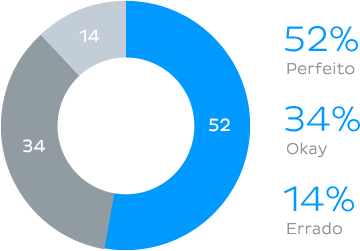

Aprenda anatomia mais rápido
Escolha seu tema
Escolha seu tema
Nós garantimos que você irá aprender de forma mais eficiente usando as nossas ferramentas. Nós criamos ilustrações anatômicas precisas e de alta qualidade, além de artigos e videoaulas revisadas por nossos profissionais médicos experientes.
Memorize a anatomia no seu ritmo. Nosso painel de estudos acompanha o seu progresso, de forma que você sempre saiba quais assuntos precisa revisar. A anatomia humana é um assunto vasto, mas você nunca ficará perdido sem saber o que estudar.
A memorização exige repetição, então você precisa gastar tempo com o estudo de anatomia regularmente. Entretanto, isso pode ser difícil quando você está fora de casa. O Kenhub funciona em smartphones, tablets e computadores, para que você possa praticar sempre que tiver uma chance, em qualquer lugar.